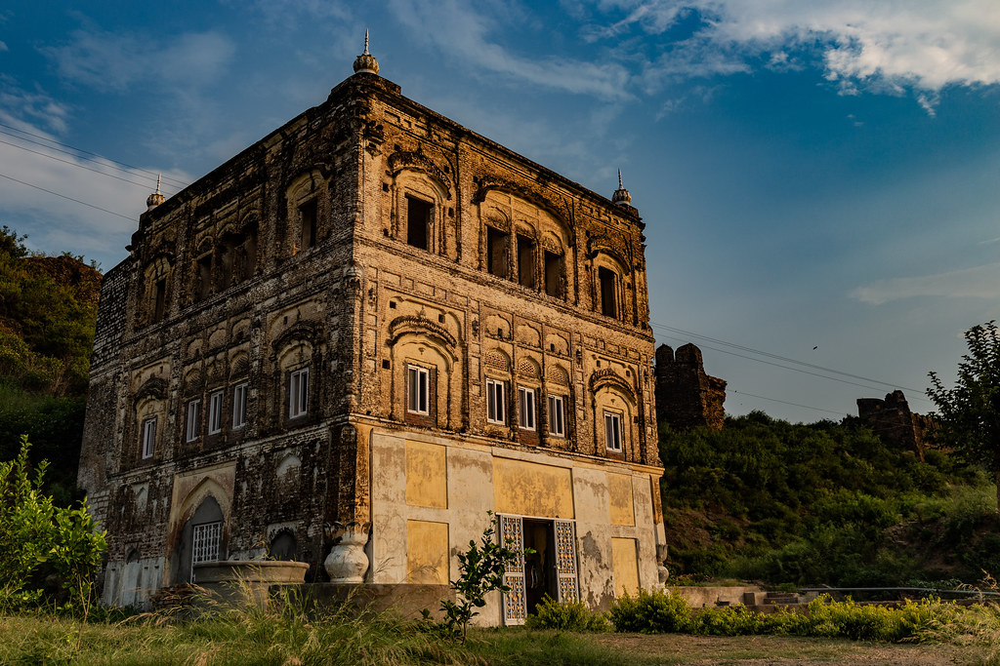
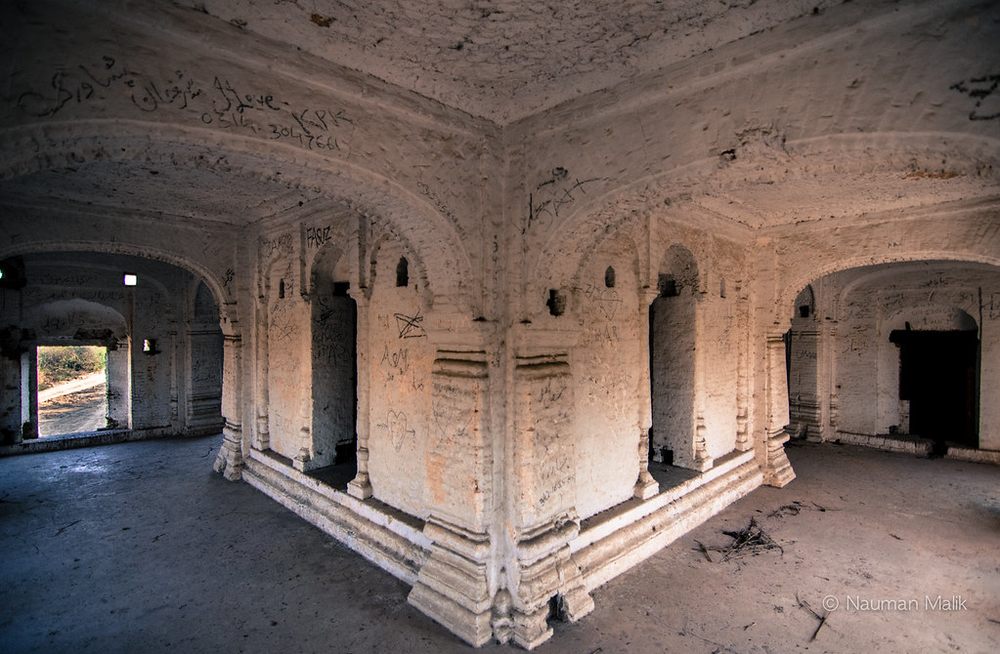
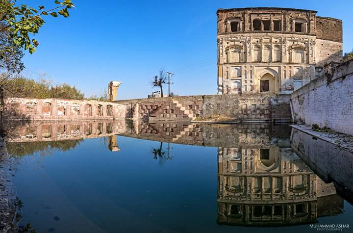

Gurdwara Chowa Sahib, present at Rohtas Fort soon to be re-opened.
-

Frontal Elevation of Gurdwara Chowa, completed in 1834.
Gurdwara Chowa Sahib which means ‘Gurdwara of the Exalted spring’ located at the northern end of Rohtas Fort a UNESCO Heritage site of Pakistan, will soon be re-opened for the religious activities of Pakistan’s Sikh followers.
Gurdwara Chowa Sahib was commissioned by Maharaja Ranjhit Singh, and it is believed that the Gurdwara commemorates the site where Guru Nanak and Bhai Mardana is popularly believed to have created a water-spring during one of his journeys known as Udaasis. Gurdwara remained close for the past 72 years, since some of the local followers moved to India during the Partition.
Interior of Gurdwara Chowa Sahib. Photo Credits: Nauman Malik, flickr.
The new Government in Pakistan earlier last month also re-opened a Hindu temple near the town of Sialkot, and unveiled a life statue of Maharaja Ranjhit Singh on his 180th death anniversary near his final resting place at the Lahore Fort, also another UNESCO heritage site.
Sarovar Pool of the Gurdwara Chowa Sahib. Photo Credits: Zeeshana, steemet.
Soon the Sikh followers from around the world can come to this Historical site and pay their religious duties. Pakistan which has long been accused for the ill-treatment of its religious minorities taking small steps to ensure inter-faith harmony is a welcoming sign.
The author also writes on Quora at Shahnaseeb Babar.
More by Pakistan, Our Stories -
Another Pakistan Army’s major selected as an Instructor in Royal Military Academy, Sandhurst
From the people of Pakistan, a 100 bed hospital was inaugrated in Afghanistan
How Pakistanis reacted to Imran-Trump meeting might blow you away!
Pakistani authorities safely rescue rock-climber after she fell off from a Peak at Hispar Glacier.